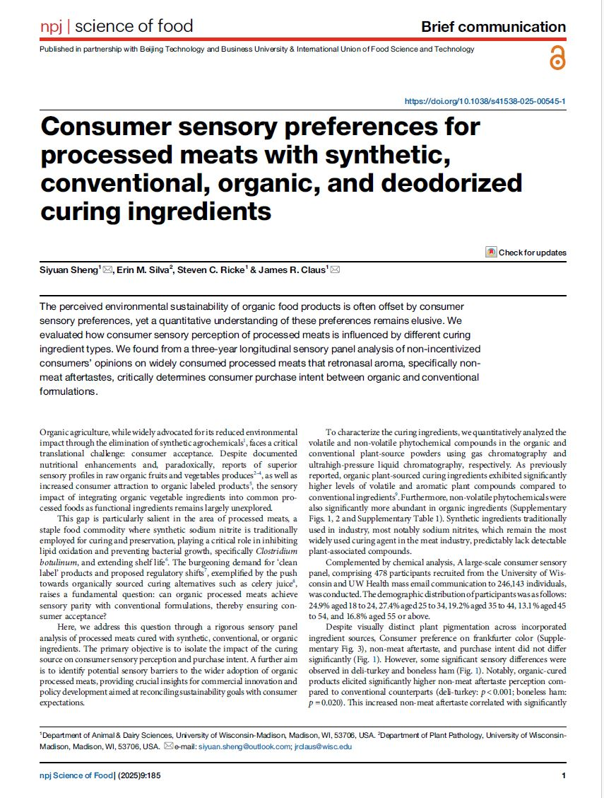
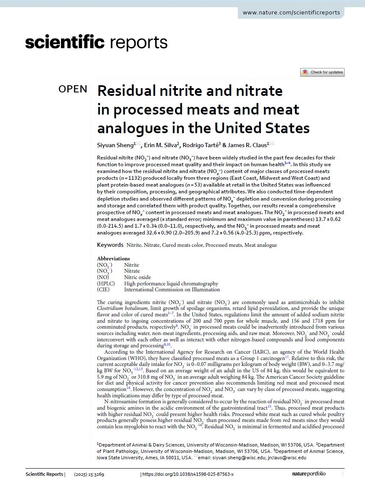
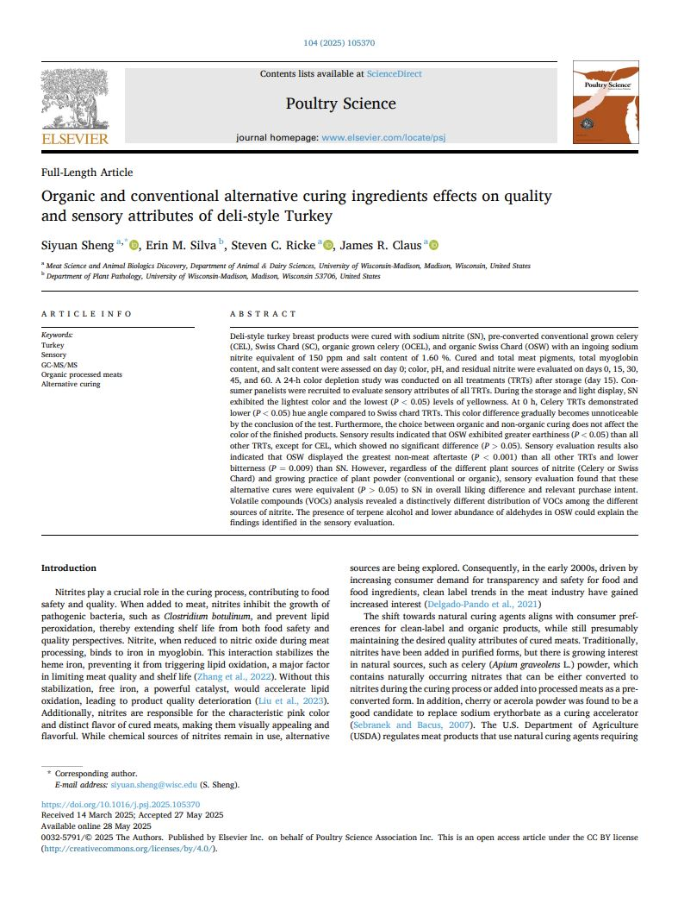
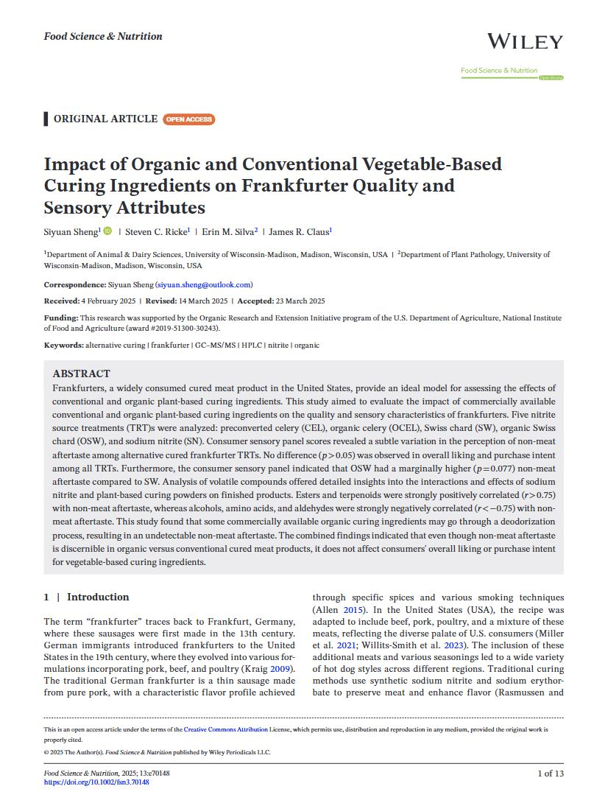
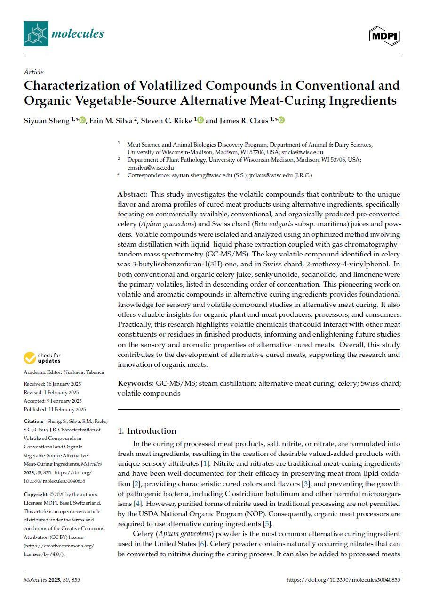

Recent Publications
This page highlights recent peer‑reviewed publications and posters from the TSU Meat Science Laboratory, including work in spatial nutrition analysis, MALDI–MSI, meat safety and quality, and consumer sensory science.
ResearchHub
Selected publications and discussions are also available on ResearchHub: ResearchHub
Highlighted Publications

Consumer sensory preferences for processed meats with synthetic, conventional, organic, and deodorized curing ingredients
npj Science of Food, 2025
The perceived environmental sustainability of organic food products is often offset by consumer sensory preferences, yet a quantitative understanding of these preferences remains elusive. We evaluated how consumer sensory perception of processed meats is influenced by different curing ingredient types. We found from a three-year longitudinal sensory panel analysis of non-incentivized consumers’ opinions on widely consumed processed meats that retronasal aroma, specifically non-meat aftertastes, critically determines consumer purchase intent between organic and conventional formulations. DOI PDF
npj Science of Food, 2025
The perceived environmental sustainability of organic food products is often offset by consumer sensory preferences, yet a quantitative understanding of these preferences remains elusive. We evaluated how consumer sensory perception of processed meats is influenced by different curing ingredient types. We found from a three-year longitudinal sensory panel analysis of non-incentivized consumers’ opinions on widely consumed processed meats that retronasal aroma, specifically non-meat aftertastes, critically determines consumer purchase intent between organic and conventional formulations. DOI PDF

Residual nitrite and nitrate in processed meats and meat analogues in the United Statesr
Scientific Reports, 2025
Residual nitrite (NO2−) and nitrate (NO3−) have been widely studied in the past few decades for their function to improve processed meat quality and their impact on human health1,2,3,4. In this study we examined how the residual nitrite and nitrate (NOx−) content of major classes of processed meats products (n = 1132) produced locally from three regions (East Coast, Midwest and West Coast) and plant protein-based meat analogues (n = 53) available at retail in the United States was influenced by their composition, processing, and geographical attributes. We also conducted time-dependent depletion studies and observed different patterns of NOx− depletion and conversion during processing and storage and correlated them with product quality. Together, our results reveal a comprehensive prospective of NOx− content in processed meats and meat analogues. The NO2− in processed meats and meat analogues averaged (± standard error; minimum and maximum value in parentheses) 13.7 ± 0.62 (0.0-214.5) and 1.7 ± 0.34 (0.0–11.0), respectively, and the NO3− in processed meats and meat analogues averaged 32.6 ± 0.90 (2.0–205.9) and 7.2 ± 0.56 (4.0-25.3) ppm, respectively. DOI PDF
Scientific Reports, 2025
Residual nitrite (NO2−) and nitrate (NO3−) have been widely studied in the past few decades for their function to improve processed meat quality and their impact on human health1,2,3,4. In this study we examined how the residual nitrite and nitrate (NOx−) content of major classes of processed meats products (n = 1132) produced locally from three regions (East Coast, Midwest and West Coast) and plant protein-based meat analogues (n = 53) available at retail in the United States was influenced by their composition, processing, and geographical attributes. We also conducted time-dependent depletion studies and observed different patterns of NOx− depletion and conversion during processing and storage and correlated them with product quality. Together, our results reveal a comprehensive prospective of NOx− content in processed meats and meat analogues. The NO2− in processed meats and meat analogues averaged (± standard error; minimum and maximum value in parentheses) 13.7 ± 0.62 (0.0-214.5) and 1.7 ± 0.34 (0.0–11.0), respectively, and the NO3− in processed meats and meat analogues averaged 32.6 ± 0.90 (2.0–205.9) and 7.2 ± 0.56 (4.0-25.3) ppm, respectively. DOI PDF

Organic and conventional alternative curing ingredients effects on quality and sensory attributes of deli-style Turkey
Poultry Science, 2025
Deli-style turkey breast products were cured with sodium nitrite (SN), pre-converted conventional grown celery (CEL), Swiss Chard (SC), organic grown celery (OCEL), and organic Swiss Chard (OSW) with an ingoing sodium nitrite equivalent of 150 ppm and salt content of 1.60 %. Cured and total meat pigments, total myoglobin content, and salt content were assessed on day 0; color, pH, and residual nitrite were evaluated on days 0, 15, 30, 45, and 60. A 24-h color depletion study was conducted on all treatments (TRTs) after storage (day 15). Consumer panelists were recruited to evaluate sensory attributes of all TRTs. During the storage and light display, SN exhibited the lightest color and the lowest (P < 0.05) levels of yellowness. At 0 h, Celery TRTs demonstrated lower (P < 0.05) hue angle compared to Swiss chard TRTs. This color difference gradually becomes unnoticeable by the conclusion of the test. Furthermore, the choice between organic and non-organic curing does not affect the color of the finished products. Sensory results indicated that OSW exhibited greater earthiness (P < 0.05) than all other TRTs, except for CEL, which showed no significant difference (P > 0.05). Sensory evaluation results also indicated that OSW displayed the greatest non-meat aftertaste (P < 0.001) than all other TRTs and lower bitterness (P = 0.009) than SN. However, regardless of the different plant sources of nitrite (Celery or Swiss Chard) and growing practice of plant powder (conventional or organic), sensory evaluation found that these alternative cures were equivalent (P > 0.05) to SN in overall liking difference and relevant purchase intent. Volatile compounds (VOCs) analysis revealed a distinctively different distribution of VOCs among the different sources of nitrite. The presence of terpene alcohol and lower abundance of aldehydes in OSW could explain the findings identified in the sensory evaluation. DOI PDF
Poultry Science, 2025
Deli-style turkey breast products were cured with sodium nitrite (SN), pre-converted conventional grown celery (CEL), Swiss Chard (SC), organic grown celery (OCEL), and organic Swiss Chard (OSW) with an ingoing sodium nitrite equivalent of 150 ppm and salt content of 1.60 %. Cured and total meat pigments, total myoglobin content, and salt content were assessed on day 0; color, pH, and residual nitrite were evaluated on days 0, 15, 30, 45, and 60. A 24-h color depletion study was conducted on all treatments (TRTs) after storage (day 15). Consumer panelists were recruited to evaluate sensory attributes of all TRTs. During the storage and light display, SN exhibited the lightest color and the lowest (P < 0.05) levels of yellowness. At 0 h, Celery TRTs demonstrated lower (P < 0.05) hue angle compared to Swiss chard TRTs. This color difference gradually becomes unnoticeable by the conclusion of the test. Furthermore, the choice between organic and non-organic curing does not affect the color of the finished products. Sensory results indicated that OSW exhibited greater earthiness (P < 0.05) than all other TRTs, except for CEL, which showed no significant difference (P > 0.05). Sensory evaluation results also indicated that OSW displayed the greatest non-meat aftertaste (P < 0.001) than all other TRTs and lower bitterness (P = 0.009) than SN. However, regardless of the different plant sources of nitrite (Celery or Swiss Chard) and growing practice of plant powder (conventional or organic), sensory evaluation found that these alternative cures were equivalent (P > 0.05) to SN in overall liking difference and relevant purchase intent. Volatile compounds (VOCs) analysis revealed a distinctively different distribution of VOCs among the different sources of nitrite. The presence of terpene alcohol and lower abundance of aldehydes in OSW could explain the findings identified in the sensory evaluation. DOI PDF

Impact of Organic and Conventional Vegetable-BasedCuring Ingredients on Frankfurter Quality andSensory Attributes
Food Science & Nutrition, 2025
Frankfurters, a widely consumed cured meat product in the United States, provide an ideal model for assessing the effects ofconventional and organic plant-based curing ingredients. This study aimed to evaluate the impact of commercially availableconventional and organic plant-based curing ingredients on the quality and sensory characteristics of frankfurters. Five nitritesource treatments (TRT)s were analyzed: preconverted celery (CEL), organic celery (OCEL), Swiss chard (SW), organic Swisschard (OSW), and sodium nitrite (SN). Consumer sensory panel scores revealed a subtle variation in the perception of non-meataftertaste among alternative cured frankfurter TRTs. No difference (p > 0.05) was observed in overall liking and purchase intentamong all TRTs. Furthermore, the consumer sensory panel indicated that OSW had a marginally higher (p = 0.077) non-meataftertaste compared to SW. Analysis of volatile compounds offered detailed insights into the interactions and effects of sodiumnitrite and plant-based curing powders on finished products. Esters and terpenoids were strongly positively correlated (r > 0.75)with non-meat aftertaste, whereas alcohols, amino acids, and aldehydes were strongly negatively correlated (r < −0.75) with non-meat aftertaste. This study found that some commercially available organic curing ingredients may go through a deodorizationprocess, resulting in an undetectable non-meat aftertaste. The combined findings indicated that even though non-meat aftertasteis discernible in organic versus conventional cured meat products, it does not affect consumers' overall liking or purchase intentfor vegetable-based curing ingredients. DOI PDF
Food Science & Nutrition, 2025
Frankfurters, a widely consumed cured meat product in the United States, provide an ideal model for assessing the effects ofconventional and organic plant-based curing ingredients. This study aimed to evaluate the impact of commercially availableconventional and organic plant-based curing ingredients on the quality and sensory characteristics of frankfurters. Five nitritesource treatments (TRT)s were analyzed: preconverted celery (CEL), organic celery (OCEL), Swiss chard (SW), organic Swisschard (OSW), and sodium nitrite (SN). Consumer sensory panel scores revealed a subtle variation in the perception of non-meataftertaste among alternative cured frankfurter TRTs. No difference (p > 0.05) was observed in overall liking and purchase intentamong all TRTs. Furthermore, the consumer sensory panel indicated that OSW had a marginally higher (p = 0.077) non-meataftertaste compared to SW. Analysis of volatile compounds offered detailed insights into the interactions and effects of sodiumnitrite and plant-based curing powders on finished products. Esters and terpenoids were strongly positively correlated (r > 0.75)with non-meat aftertaste, whereas alcohols, amino acids, and aldehydes were strongly negatively correlated (r < −0.75) with non-meat aftertaste. This study found that some commercially available organic curing ingredients may go through a deodorizationprocess, resulting in an undetectable non-meat aftertaste. The combined findings indicated that even though non-meat aftertasteis discernible in organic versus conventional cured meat products, it does not affect consumers' overall liking or purchase intentfor vegetable-based curing ingredients. DOI PDF

Characterization of Volatilized Compounds in Conventional and Organic Vegetable-Source Alternative Meat-Curing Ingredients
Molecules, 2025
This study investigates the volatile compounds that contribute to the unique flavor and aroma profiles of cured meat products using alternative ingredients, specifically focusing on commercially available, conventional, and organically produced pre-converted celery (Apium graveolens) and Swiss chard (Beta vulgaris subsp. maritima) juices and powders. Volatile compounds were isolated and analyzed using an optimized method involving steam distillation with liquid–liquid phase extraction coupled with gas chromatography–tandem mass spectrometry (GC-MS/MS). The key volatile compound identified in celery was 3-butylisobenzofuran-1(3H)-one, and in Swiss chard, 2-methoxy-4-vinylphenol. In both conventional and organic celery juice, senkyunolide, sedanolide, and limonene were the primary volatiles, listed in descending order of concentration. This pioneering work on volatile and aromatic compounds in alternative curing ingredients provides foundational knowledge for sensory and volatile compound studies in alternative meat curing. It also offers valuable insights for organic plant and meat producers, processors, and consumers. Practically, this research highlights volatile chemicals that could interact with other meat constituents or residues in finished products, informing and enlightening future studies on the sensory and aromatic properties of alternative cured meats. Overall, this study contributes to the development of alternative cured meats, supporting the research and innovation of organic meats. DOI PDF
Molecules, 2025
This study investigates the volatile compounds that contribute to the unique flavor and aroma profiles of cured meat products using alternative ingredients, specifically focusing on commercially available, conventional, and organically produced pre-converted celery (Apium graveolens) and Swiss chard (Beta vulgaris subsp. maritima) juices and powders. Volatile compounds were isolated and analyzed using an optimized method involving steam distillation with liquid–liquid phase extraction coupled with gas chromatography–tandem mass spectrometry (GC-MS/MS). The key volatile compound identified in celery was 3-butylisobenzofuran-1(3H)-one, and in Swiss chard, 2-methoxy-4-vinylphenol. In both conventional and organic celery juice, senkyunolide, sedanolide, and limonene were the primary volatiles, listed in descending order of concentration. This pioneering work on volatile and aromatic compounds in alternative curing ingredients provides foundational knowledge for sensory and volatile compound studies in alternative meat curing. It also offers valuable insights for organic plant and meat producers, processors, and consumers. Practically, this research highlights volatile chemicals that could interact with other meat constituents or residues in finished products, informing and enlightening future studies on the sensory and aromatic properties of alternative cured meats. Overall, this study contributes to the development of alternative cured meats, supporting the research and innovation of organic meats. DOI PDF